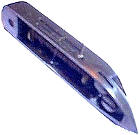

This is the type of shuttle which was used in Howe's Model A or "Long Shuttle" machine. The shuttle illustrated above is from a version of the Model A which was made (probably under licence) by Jones in England. It is basically a version of the Transverse or Reciprocating Shuttle, travelling to and fro in a straight line (though at right angles to the head like the Vibrating Shuttle), but whereas Transverse Shuttles are usually around 1.875 inches long, this "Long" shuttle is 2.25 inches in length